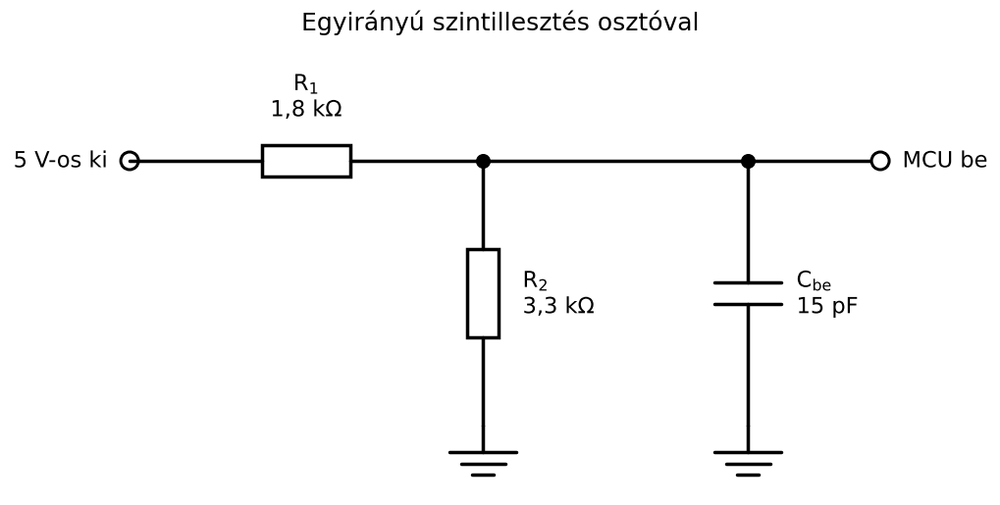
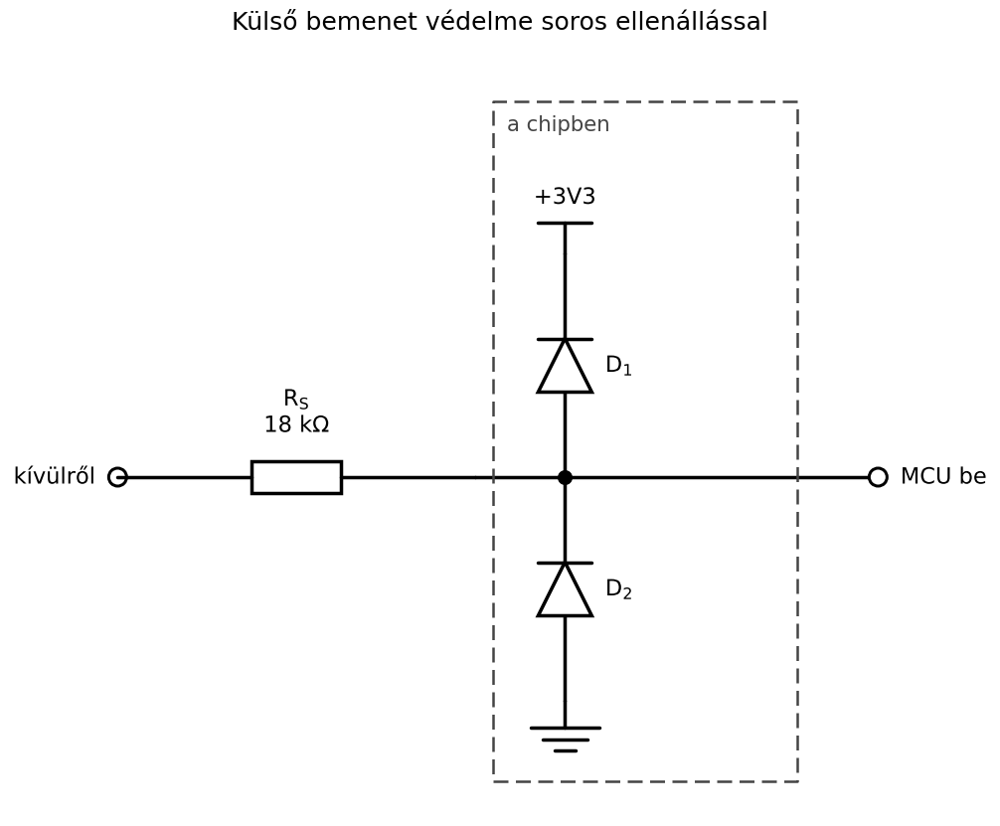
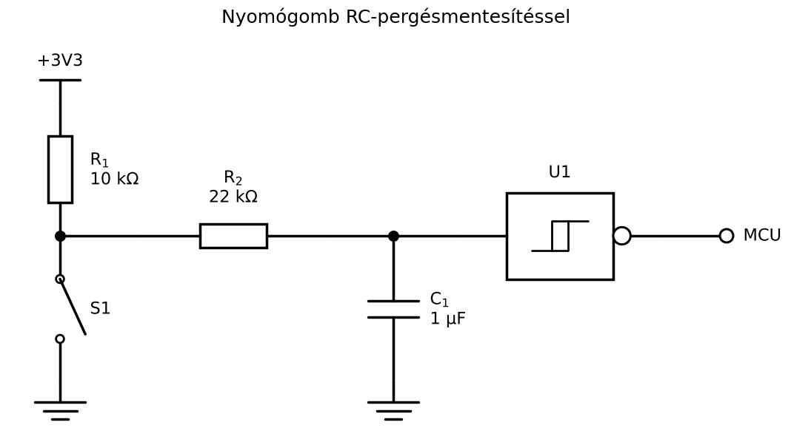
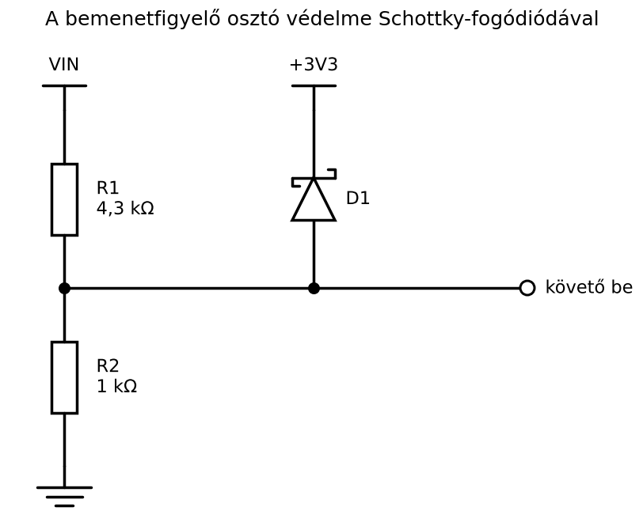

Ebben az alfejezetben megtanulod:
A szenzormodul 3,3 V-os mikrovezérlőjéhez 5 V-os bővítőkártya érkezik: egy 5 V-os kimenet az egyik lábra, egy 5 V-os I²C-eszköz a buszra, és egy nyomógomb a csatlakozón. A csatlakozóra pedig bárki rádughat 12 V-ot. Az előző alfejezetben (Logikai szintek, családok és kimenettípusok) láttuk, hogy a szintek nem mindig egyeznek. Most azt kell megoldani, hogy egyezzenek, a bemenet túlélje a hibát, és a gombnyomást a program egyszer lássa, ne tízszer.
Definíció. A szintillesztő (level shifter) olyan kapcsolás, amely az egyik logikai feszültségű oldal jelét a másik oldal szintjein jeleníti meg.
Gondolj rá tolmácsként: lehet egyirányú (csak 5 V-ról 3,3 V-ra beszél) vagy kétirányú. Az, hogy melyik kell, három kérdésen dől el:
A védelem ugyanennek a másik oldala: egy bemenet lábánál belül védődiódák vezetnek a tápsín és a föld felé. Ezeken keresztül egy túl magas jel „beleöntheti” az áramot a tápsínbe, ahogyan egy túlcsorduló kád a padlóra (Egyenirányítás, védő- és fogókapcsolások, Schottky-dióda). A pergés pedig: a mechanikus érintkező összecsapódáskor néhányszor visszapattan, mielőtt megnyugszik.
Osztó. Lassú, egyirányú jelhez elég két ellenállás (Feszültségosztó, áramosztó és a terhelés hatása).

Szavakban: az arány adja a szintet, a Thévenin-ellenállás és a bemeneti kapacitás a sebességet. Nagy ellenállás kevés áramot kér, de lassú; kicsi gyors, de a meghajtót terheli. A legnagyobb eset (táp, ellenállástűrés) nem lépheti át a bemenet abszolút határát, a legkisebbnek fölött kell maradnia.
Soros ellenállás a belső diódával. Egy a jelútban korlátozza a védődiódán átfolyó áramot:
ahol a belső dióda nyitófeszültsége (mintaadat: 0,5 V). Két feltétel: az adatlap engedje a bemeneti (injektált) áramot, és adjon rá határt (mintaadatunk 1 mA; sok adatlap ezt kifejezetten tiltja vagy csak rövid időre engedi). A láb ilyenkor V-on áll, ami egy „legfeljebb V” típusú feszültségkorlátot sértene (adatlapfüggő).
5 V-tűrő bemenet. Sok mikrovezérlő némely lába (5 V tolerant) külső alkatrész nélkül is elviseli az 5 V-ot. Ellenőrizd, hogy tápfeszültség nélkül is igaz-e, és hogy az adott üzemmódban (pl. analóg funkció) is érvényes-e – lábanként változhat (adatlapfüggő).
Open-drain buszhoz egyetlen kis n-MOSFET elég vonalanként (a közismert BSS138-típusú elrendezés, értékei adatlapfüggők). A gate az alacsony oldal tápjára (3,3 V) van kötve, a source az alacsony oldali vonalra, a drain a magas oldalira; mindkét oldalnak saját felhúzója van. A MOSFET testébe épült test-dióda anódja a source, katódja a drain (A MOSFET működése és adatlapja).
Gondolj előre: mi történik, ha csak a magas oldal húzza le a vonalat? A gate 3,3 V-on van, a source az elején szintén közel 3,3 V-on – tehát . Hogyan lesz ebből lehúzás?
Az ábra d) panelje a leggyakoribb hiba: felcserélt source és drain. Ekkor a test-dióda alaphelyzetben az 5 V-ról a 3,3 V-os oldalra vezet, és ott 3,72 V-ot állít elő. A lehúzás látszólag működik, ezért a hiba könnyen rejtve marad.
Méretezési feltételek:
1,8 V-os alacsony oldalnál a 3. állapot elbukik: V, ez egy 1,5 V-os legnagyobb küszöbű MOSFET-nek kevés (mintaadat). Alacsony küszöbű típus vagy dedikált IC kell. A megoldás csak open-drain vonalra való: a felfutást passzív felhúzó adja, gyors push-pull jelhez lassú.
Két táplábú IC-k, egy-egy oldali tápfeszültséggel:
Mindegyik korlát (sebesség, terhelés, tápsorrend, kikapcsolt oldal viselkedése) adatlapfüggő.
Továbbvitt eredmény. A szintillesztő választásának szempontjai: irány, kimenettípus (push-pull vagy open-drain), sebesség, a két tápfeszültség és a tápkimaradás viselkedése. Ezt a Követelményektől a blokkdiagramig és a 2. záróprojekt: érzékelő-illesztő és mérőlánc használja.
Külső csatlakozóra vezetett bemenetnél a soros az első védelem. A rosszabbik eset gyakran a kikapcsolt modul: , ekkor az egész esik -en.

A tápsínbe folyó áram csak akkor tűnik el nyomtalanul, ha a sínen más fogyaszt legalább ennyit. Alvó modulnál a fogyasztás µA-es, az LDO (lineáris szabályzó) pedig áramot nem tud elnyelni: a sín felhúzódik a bemenet felé, és tönkreteheti a többi IC-t. Ellenszer: nagyobb , külső (Schottky-)fogódióda, a sínen túlfeszültség-korlátozó (TVS, tranziens-elnyomó dióda) vagy minimális terhelés. Az elektrosztatikus kisülés (Elektrosztatikus kisülés (ESD)) ellen a csatlakozónál TVS kell, amelyet az ESD- és túlfeszültség-védelem az áramkörben tárgyal.
Továbbvitt eredmény. A bemenet soros ellenállása legalább , kikapcsolt táppal számolva; a bevezetett áram a tápsínt terheli. Ezt az ESD- és túlfeszültség-védelem az áramkörben és a 2. záróprojekt: érzékelő-illesztő és mérőlánc használja.
A mechanikus érintkező néhány ezredmásodpercig pereg (contact bounce); a pergés ideje a kapcsolótól függ (mintaadatunk: legfeljebb 5 ms). Egy gyors bemenet ilyenkor sok élt lát.

Az korlátozza a kisütő áramot az érintkezőn, és ő szabja meg a lenyomás időállandóját:
A Schmitt-inverter két küszöbbel (, ) billen (Komparátor, hiszterézis és aktív szűrők). A méretezés feltétele: egy hosszú pergési szakasz alatt a feszültség a küszöb közelében kevesebbet változzon, mint a hiszterézis. Elengedéskor a közbeeső zárások, lenyomáskor a közbeeső nyitások mozgatják vissza:
Az ár a késleltetés (RC és RL töltés–kisütés, időállandó küszöbidő-képlete): lenyomás után , elengedés után . Gombnál néhány tíz ms észrevétlen. Szoftveres megoldás is lehet: a program ezredmásodpercenként mintát vesz, és csak akkor fogadja el az új állapotot, ha egymás utáni minta egyezik. Ilyenkor a hardverből csak a felhúzó és a védelem marad.
A) Osztó 5 V-ról ( kΩ, kΩ, 1%):
Csapda: ha a mikrovezérlő nincs táplálva, a Thévenin-forrás (3,24 V) a diódán át mA-t tol a sínbe – az 1 mA-es mintahatár fölött. Tízszeres értékekkel (18 kΩ, 33 kΩ) ez 0,23 mA, de a felfutás 0,38 µs.
B) Szintillesztő I²C-hez: kΩ, kΩ, oldalanként 100 pF.
C) Védőellenállás külső bemenetre, hibás bekötéssel akár 16 V (a modul bemenetének felső határa), kikapcsolt táppal: kΩ; választás 18 kΩ. Áram 0,86 mA, teljesítmény W, azaz 13 mW. A jel lassabb: , ami státuszjelnek jó.
D) Pergésmentesítő: ms, ms; küszöbök (mintaadat) 1,9 V és 1,2 V, V. 5 ms-os szakaszra: V és V, mindkettő 0,7 V alatt. Késleltetés: ms lenyomáskor, ms elengedéskor.
E) A bevezető bemenetfigyelő osztó védelme. A Feszültségosztó, áramosztó és a terhelés hatása osztója (4,3 kΩ felül, 1 kΩ alul, a követő bemenet 100 kΩ, mintaadat) 12 V-ról 2,25 V-ot, 16 V-ról terhelve 2,995 V-ot ad. A 30 V-os tesztimpulzusra viszont terheletlenül 5,66 V jutna a lábra. A Thévenin-ellenállás kΩ, ezért a belső diódán
Mindkettő túl sok. Két megoldás:

A választás a mérési pontosságon múlik: itt a 2. megoldás jobb, a túlfeszültség-védelem teljes tervezése (TVS a VIN-en) a Tápbemeneti védelmek: biztosíték, polaritás, túlfeszültség, áramlökés témája.
from elkit import extra_elch16 as x, units
for r1, r2 in ((1.8e3, 3.3e3), (18e3, 33e3)):
r_th = r1 * r2 / (r1 + r2)
u_th = 5.0 * r2 / (r1 + r2)
i_off = x.clamp_current(u_th, r_th, u_dd=0.0)
tr = 2.2 * r_th * x.C_BEMENET
print(f"osztó {units.fmt(r1, 'Ω')}/{units.fmt(r2, 'Ω')}: kikapcsolva "
f"{units.fmt(i_off, 'A')}, t_r = {units.fmt(tr, 's')}")
for u_dd in (3.3, 0.0):
i = x.clamp_current(16.0, 18e3, u_dd=u_dd)
print(f"R_S = 18 kΩ, 16 V, U_DD = {u_dd} V: I = {units.fmt(i, 'A')}")
u_th, r_th = 30.0 * 1.0 / 5.3, 4.3e3 * 1e3 / 5.3e3 # VIN-osztó, 30 V-os impulzus
for r_s in (0.0, 4.7e3):
be, ki_ = (x.clamp_current(u_th, r_th + r_s, u_dd=u) for u in (3.3, 0.0))
print(f"VIN-osztó, R_S = {units.fmt(r_s, 'Ω'):7s}: táppal {units.fmt(be, 'A'):7s} "
f"táp nélkül {units.fmt(ki_, 'A')}")
t, u_c = x.debounce_wave()
ki = x.schmitt(u_c)
nyers = [0 if x.contact_closed(tk) else 1 for tk in t]
elek = [t[k + 1] for k in range(len(ki) - 1) if ki[k] != ki[k + 1]]
print("nyers élek:", x.transitions(nyers), " szűrt élek:", x.transitions(ki))
print("a kimenet billenései:", ", ".join(f"{e * 1e3:.1f} ms" for e in elek))osztó 1.8 kΩ/3.3 kΩ: kikapcsolva 2.35 mA, t_r = 38.4 ns
osztó 18 kΩ/33 kΩ: kikapcsolva 235 µA, t_r = 384 ns
R_S = 18 kΩ, 16 V, U_DD = 3.3 V: I = 678 µA
R_S = 18 kΩ, 16 V, U_DD = 0.0 V: I = 861 µA
VIN-osztó, R_S = 0 Ω : táppal 2.29 mA táp nélkül 6.36 mA
VIN-osztó, R_S = 4.7 kΩ : táppal 338 µA táp nélkül 936 µA
nyers élek: 12 szűrt élek: 2
a kimenet billenései: 29.7 ms, 109.6 msA billenések 29,7 ms-nál és 109,6 ms-nál vannak, a lenyomás 5 ms-nál, az elengedés 80 ms-nál volt. A 24,7 ms és 29,6 ms késés kicsit nagyobb a kézi 22 és 27 ms-nál, mert a pergés közbeni visszatöltődések hozzáadódnak.
Először a szintillesztő lapján válaszd sorban a négy lehúzási esetet; a „hibás bekötés” jelölővel nézd meg a felcserélt source–drain hatását. Utána a pergésmentesítő:
A szintillesztés módját az irány, a kimenettípus, a sebesség és a tápállapot dönti el. Egyirányú lassú jelhez osztó vagy soros ellenállás elég, de a legnagyobb és a kikapcsolt esetet is számolni kell. Open-drain buszra egy MOSFET vonalanként: gate az alacsony tápon, source az alacsony, drain a magas oldalon; alaphelyzetben zár, lehúzáskor a csatorna (a magas oldalról a test-dióda segítségével) vezet, és a lehúzó mindkét felhúzó áramát nyeli. A soros védőellenállás: , az áram a tápsínt terheli. A pergést RC és Schmitt-bemenet vagy mintaszámláló program tünteti el, néhány tíz ms késés árán.
1. Névleges: V. Legnagyobb ( k, k): V, a 3,6 V-os mintahatár alatt.
2. Táppal: mA. Táp nélkül: mA – éppen az 1 mA-es mintahatár alatt, tartalék nélkül.
3. mA, több mint 3 mA: nem felel meg. 3,3 kΩ mindkét oldalon: mA, és ns, 300 ns alatt. Jó (kis tartalékkal: a kapacitás 107 pF-ig nőhet).
4. kΩ (E24). Ezzel ms. A két feltétel: V és V, mindkettő 0,7 V alatt. Késés: 22 ms lenyomáskor, ms elengedéskor. Figyelj: a 100 kΩ nagy ellenállás, a bemenet szivárgóárama (1 µA mintaadat) 0,1 V hibát ad – itt még elfogadható.
5.
def szoftveres(n, fazis, ts=1e-3):
allapot, db, ki, k = 0, 0, [], 0
while k * ts + fazis < 0.15:
minta = 0 if not x.contact_closed(k * ts + fazis) else 1
db = db + 1 if minta != allapot else 0
if db >= n:
allapot, db = minta, 0
ki.append(allapot)
k += 1
return x.transitions(ki)
for n in range(1, 5):
eredmeny = [szoftveres(n, p * 1e-4) for p in range(10)]
print(f"N = {n}: élek a 10 mintavételi fázisra: {eredmeny}")N = 1: élek a 10 mintavételi fázisra: [8, 6, 8, 8, 8, 6, 4, 4, 4, 4]
N = 2: élek a 10 mintavételi fázisra: [2, 2, 4, 4, 2, 2, 2, 2, 2, 2]
N = 3: élek a 10 mintavételi fázisra: [2, 2, 2, 2, 2, 2, 2, 2, 2, 2]
N = 4: élek a 10 mintavételi fázisra: [2, 2, 2, 2, 2, 2, 2, 2, 2, 2]A legkisebb : hosszabb a pergés leghosszabb, félrevezető szakaszánál (1,6 ms). A gyakorlatban nagyobb tartalék (pl. 10–20 ms) ajánlott, mert más kapcsoló tovább pereghet.
6. Az osztó arányára : a magas szinthez , a határhoz . Nincs ilyen , tehát egyetlen osztóval nem megy. Megoldás: osztó -tel és a bemeneten külső fogódióda vagy 3,3 V-os határoló a soros ellenállás után (Egyenirányítás, védő- és fogókapcsolások, Schottky-dióda); tisztább egy komparátor referenciával, vagy tranzisztoros, illetve optocsatolós bemenet (Mikrovezérlő GPIO illesztése terhelésekhez), amely a küszöböt nem a lábbal méri.